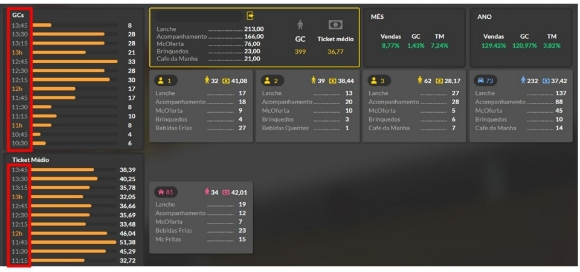

Tela do aplicativo - Celular
O BR One Franquias oferece a visualização de um dashboard das informações da loja através de uma televisão, a conectividade se dá através da leitura de um QR Code dentro do Tablet, que gera as informações e transmite para o aparelho em formato de indicadores. Sua utilização é para uso interno da loja, contendo atualização das informações das vendas (GC, Ticket médio e grupo de itens) em tempo real (sua atualização é de acordo como configurado diretamente no SAP), nas formas de visão macro da loja e segmentado por pontos de vendas, gerando dados essenciais para tomadas de decisão. Como acessar o Dashboard na TV
1º PASSO: entrar no link de acesso através do navegador da televisão
Para acessar o dashboard na TV é necessário ter acesso ao link de acordo com a versão do SAP utilizado (links abaixo) e abri-lo no navegador direto na televisão com acesso à internet. A imagem abaixo representa a tela que aparecerá ao clicar no link mencionado e servirá para realizar a conexão com o aplicativo BrOne Franquias do tablet.

[LINKS] SAP V. 9.3.: <https://tinyurl.com/dashboard-pod1>
SAP V. 10.: <https://tinyurl.com/dashboard-pod2>
2º PASSO: Abrir o BrOne Franquias no TABLET e “Autorizar indicadores”
Abra o aplicativo do tablet e clique nas iniciais no canto superior direito, depois selecione a opção “Autorizar indicadores”.

3º PASSO: Informar código do dispositivo
Ao selecionar a opção de “Autorizar indicadores”, irá abrir a tela para inserir o código presente no QR Code, selecione a opção “Escanear QR Code” para abrir a câmera.

O campo será preenchido automaticamente com o código, clique em “Salvar” no canto inferior direito para prosseguir e as alterações irão aparecer na televisão.

Quais são os dados do Dashboard na TV?
Os dados são os mesmos que aparecem no módulo de “Dashboard de Vendas” no aplicativo BrOne Franquias e são atualizados e transmitidos na TV pelo tempo definido na tela de “Configuração por filial” do SAP de cada franqueado, como mostra a imagem abaixo. A configuração fica em “Administração > Definição > BrOne Franquias > Módulo de Caixa e Cofre > Configuração por filial”.

Perceba que na imagem abaixo, a variação do tempo na lateral marcada em vermelho é de quinze em quinze minutos, sendo este valor padrão do Dashboard da TV, pois este parâmetro serve apenas para separar a quantidade de cupons (GCs) que foram emitidos e o valor do ticket médio a cada de 15 minutos para uma visualização dinâmica de informações.
Detalhes e explicações sobre o Dashboard na TV
A imagem abaixo é um recorte feito do cabeçalho do Dashboard da TV, no qual exibe a filial que foi logada no tablet e feito o processo de autorização de indicadores pelo QR Code (1), os valores mostrados serão sempre referentes ao dia e turno atuais. Ao lado temos os indicadores de comparação de Month to Date (MTD) (2) e Year to Date (YTD) (3).
OBS.: O Dashboard da TV não faz seleção com mais de uma filial, sendo esta função apenas possível no módulo de “Dashboard de Vendas” no aplicativo BrOne Franquias do tablet.


Indicador MTD
Descrição gerada automaticamente]
O indicador MTD é uma métrica utilizada para comparar o período do primeiro dia do mês corrente até a data de visualização do dashboard com o mesmo período no ano passado, ou seja, se o usuário estiver visualizando o dashboard em 25 de agosto de 2023, este resultado será comparado com o resultado do mesmo período do ano anterior: dia primeiro até o 25 de agosto de 2022. Na imagem acima, por exemplo, o valor de comparação em “Vendas” está em verde, indicando que houve um acréscimo de 8,77% em relação ao período do ano passado, se estivesse em vermelho, seria um decréscimo.
Indicador YTD

O indicador YTD faz uma comparação do início do ano corrente até a data de visualização do dashboard e compara com o mesmo período no ano passado. Ou seja, se o usuário estiver visualizando o dashboard em 25 de agosto de 2023, irá pegar o total acumulado do dia primeiro de janeiro do ano corrente até a data de visualização e irá comparar com o resultado do dia primeiro de janeiro até 25 de agosto do ano passado. Na imagem acima, por exemplo, o ticket médio subiu 3,82% em relação ao período do ano passado.
Perceba que sua diferença entre os dois é referente ao tempo de comparação:
o YTD irá começar desde primeiro de janeiro até a data presente do dashboard,
já o MTD se limita apenas ao mês corrente da visualização.
Visualização por Caixas abertos
Todos os caixas abertos também aparecem individualmente no dashboard para TV sendo indicados pelo seu número e seu segmento através das etiquetas e cores, na imagem abaixo, por exemplo, os caixas de balcão estão representados pela cor amarela e o símbolo de perfil (1), o caixa de drive-thru está marcado pela cor azul e o símbolo de um carro (2) e o caixa de delivery está em rosa e com a etiqueta de uma casa (3).

Assim como no cabeçalho, as informações que aparecem são referentes às vendas feitas do dia, porém nesta área estão separados pelos caixas abertos da loja, exibindo a quantidade de GCs registrados, quantos e quais foram os grupos de itens vendidos, e o cálculo de ticket médio de todas as vendas. Na imagem abaixo foi feito um recorte identificando cada item visual para maior compreensão.